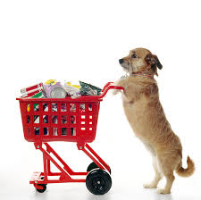

Donaciones
 Con un acto tan simple como acudir a a nuestra sede y hacer tu ingreso de la cantidad que tu queiras conforme a tus posibilidades, harás la vida de nuestros animales un poco menos triste. También puedes hacer donaciones a la Fundación en dinero, alimento, medicamentos, atención veterinaria, etc.